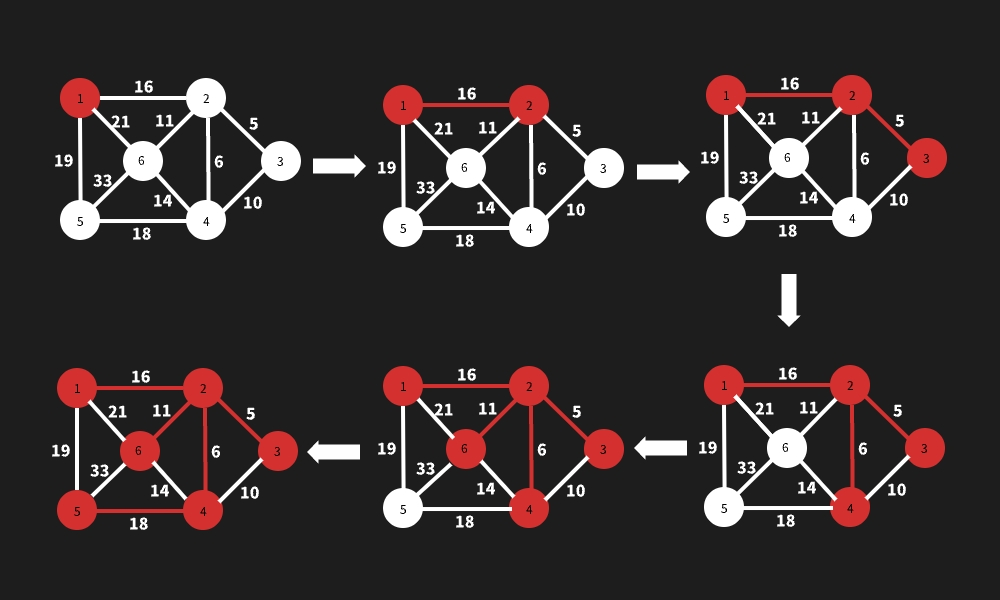

<!DOCTYPE html>
<html lang="en">
  <head>
    <meta charset="utf-8" />
    <meta name="viewport" content="width=device-width, initial-scale=1.0, maximum-scale=1.0, user-scalable=no" />

    <title>最小生成树 - 算法设计与分析</title>
    <link rel="shortcut icon" href="./favicon.ico" />
    <link rel="stylesheet" href="./dist/reset.css" />
    <link rel="stylesheet" href="./dist/reveal.css" />
    <link rel="stylesheet" href="./dist/theme/simple.css" id="theme" />
    <link rel="stylesheet" href="./css/highlight/monokai-sublime.css" />

    <link rel="stylesheet" href="./assets/custom.css" />
    <link rel="stylesheet" href="./assets/dark.css" />

  </head>
  <body>
    <div class="reveal">
      <div class="slides"><section ><section data-markdown><script type="text/template">

<div class="middle center">
<div style="width: 100%">


# 最小生成树

<hr/>

2023 年人工智能与计算机学院「算法设计与分析」课程

By [@冯则涛（jujimeizuo)](http://www.jujimeizuo.cn)

<!-- ←/→ Space Home End 翻页 -->


<div style="text-align: right; margin-top: 2em;">
<p>2023.9.19&emsp;&emsp;&emsp;</p>
</div>

</div>
</div>

</script></section><section data-markdown><script type="text/template">

## 本节内容

- 什么是最小生成树
- 图的存储
- Prim 算法
- Kruskal 算法
- Prim vs Kruskal
- 扩展


</script></section></section><section ><section data-markdown><script type="text/template">

<div class="middle center">
<div style="width: 100%">

# Part.1 什么是最小生成树?

</div>
</div>


</script></section><section data-markdown><script type="text/template">

## 实际问题

在设计通信网络时，用图的顶点表示城市，用边$(u,v)$的权值$c[u][v]$表示建立城市$u$和城市$v$之间的通信线路所需的费用，请给出建立通信网络的最经济的方案。

</script></section><section data-markdown><script type="text/template">

## 什么是最小生成树

<div class="fragment">

- 图:由顶点的有穷非空集合和顶点之间边的集合组成，表示为$G=(V,E)$;

</div>


<div class="fragment">

- 子图:对一张图$G = (V,E)$，若存在另一张图$H=(H^\prime, E^\prime)$满足$V^\prime \in V$且$E^\prime \in E$，则称$H$是$G$的子图（subgraph），记作$H \in G$;
</div>

<div class="fragment">

- 生成子图:若$H \in G$满足$V^\prime = V$，则称$H$为$G$的生成子图/支撑子图;

</div>

<div class="fragment">

- (无根)树:有$n$个结点，$n-1$条边的连通无向图;

</div>

<div class="fragment">

- 生成树:一个连通无向图的生成子图，同时要求是树，即在图的边集中选择$n-1$条，将所有顶点连通;

</div>

<div class="fragment">

- 定义无向连通图的最小生成树（Minimum Spanning Tree，MST）为边权和最小的生成树。

</div>

<div class="fragment">

- **只有连通图才有生成树，而对于非连通图，只存在生成树林**;

</div>

</script></section></section><section ><section data-markdown><script type="text/template">


<div class="middle center">
<div style="width: 100%">

# Part.2 图的存储

</div>
</div>

</script></section><section data-markdown><script type="text/template">
## 图的存储

<div class="fragment">

- 一张图需要存储什么信息？
    - 越丰富越好，当然不能存储过多无用信息，导致空间消耗大
    - 点的信息、边的信息、边的连接情况
    - 无向图？有向图？树？

</div>

<div class="fragment">

- 邻接矩阵、邻接表、十字链表、邻接多重表、链式前向星等等

</div>

<div class="fragment">
<div style="text-align: center; margin-top: 2em;font-size: 1.5em;">
利用 C++ 的继承特性来设计!
</div>
</div>

</script></section><section data-markdown><script type="text/template">

## 基类 graph

<div class="fragment">

```C++
template <typename T>
class graph {
public:
    struct edge {   // 边
        int from;   // 边的起始点
        int to;     // 边的终点
        T cost;     // 边权
    };

    const int n;                        // 点数
    std::vector<edge> edges;            // 所有边的信息
    std::vector<std::vector<int>> g;    // 所有点连接的边的信息

    graph(int _n) : n(_n), g(_n) {}

    virtual int add(int from, int to, T cost) = 0;
};
```

</div>

</script></section><section data-markdown><script type="text/template">

## 有向图 digraph

<div class="fragment">

```C++ {.digraph}
template <typename T>
class digraph : public graph<T> {
public:
    using graph<T>::edges;
    using graph<T>::g;
    using graph<T>::n;

    digraph(int _n) : graph<T>(_n) {}
 
    int add(int from, int to, T cost = 1) {
        assert(0 <= from && from < n && 0 <= to && to < n);
        int id = (int) edges.size();
        g[from].push_back(id);
        edges.push_back({from, to, cost});
        return id;
    }
 
    digraph<T> reverse() const {
        digraph<T> rev(n);
        for (auto &e : edges) {
            rev.add(e.to, e.from, e.cost);
        }
        return rev;
    }
};
```

</div>

</script></section><section data-markdown><script type="text/template">

## 无向图 undigraph

<div class="fragment">

```C++
template <typename T>
class undigraph : public graph<T> {
public:
    using graph<T>::edges;
    using graph<T>::g;
    using graph<T>::n;
 
    undigraph(int _n) : graph<T>(_n) {}
 
    int add(int from, int to, T cost = 1) {
        assert(0 <= from && from < n && 0 <= to && to < n);
        int id = (int) edges.size();
        g[from].push_back(id);
        g[to].push_back(id);
        edges.push_back({from, to, cost});
        return id;
    }
};
```

</div>

</script></section><section data-markdown><script type="text/template">

## 树 forest

<div class="fragment">

```C++
template <typename T>
class forest : public graph<T> {
public:
    using graph<T>::edges;
    using graph<T>::g;
    using graph<T>::n;

    forest(int _n) : graph<T>(_n) {}

    int add (int from, int to, T cost = 1) {
        assert(0 <= from && from < n && 0 <= to && to < n);
        int id = (int) edges.size();
        assert(id < n - 1);
        g[from].push_back(id);
        g[to].push_back(id);
        edges.push_back({from, to, cost});
        return id;
    }
};
```

</div>

</script></section></section><section ><section data-markdown><script type="text/template">

<div class="middle center">
<div style="width: 100%">

# Part.3 Prim

</div>
</div>

</script></section><section data-markdown><script type="text/template">

## Prim 算法流程

<div style="font-size: 37px; margin-left: 1em; margin-right: 1em">
从点的角度出发，挑选与点相连的最短边。
</div>

<div class="fragment">

1. 以某一个点开始，寻找当前该点可以访问的所有的边；

</div>

<div class="fragment">

2. 在已经寻找的边中发现最小边，这个边必须有一个点还没有访问过，将还没有访问的点加入我们的集合，记录添加的边；

</div>

<div class="fragment">

3. 寻找当前集合可以访问的所有边，重复2的过程，直到没有新的点可以加入；

</div>

<div class="fragment">

4. 此时由所有边构成的树即为最小生成树。

</div>


</script></section><section data-markdown><script type="text/template">

## Prim 图解

<div class="middle center">



</div>


</script></section><section data-markdown><script type="text/template">

## 找集合中最小边

<div class="fragment">

- 暴力寻找，$\mathcal{O(n)}$

```C++
for (int i = 0; i < n; i++) {
    int node = -1;
    for (int j = 0; j < n; j++) {
        if (vis[j]) {
            continue;
        }
        // dist 表示节点到生成树的最小距离
        if (node == -1 || dist[node] > dist[j]) {
            node = j;
        }
        ...
    }
}
```

</div>

<div class="fragment">

- 二叉堆维护，$\mathcal{O}(\log n)$，不支持$\mathcal{O}(1)$的 descrease-key

</div>

<div class="fragment">

- 斐波那契堆（优先队列）维护，$\mathcal{O}(\log n)$，支持 update 一次是$O(1)$

</div>

</script></section><section data-markdown><script type="text/template">

## Prim Code (堆优化)

```C++ {.prim}
template <typename T>
bool Prim(const undigraph<T> &g, T& ans) {
    std::vector<bool> vis(g.n);
    std::priority_queue<std::pair<T, int>, std::vector<std::pair<T, int>>, 
                        std::greater<std::pair<T, int>> > q;
    q.push({0, 0});
    int cnt = 0; ans = 0;
    while (!q.empty() && cnt < g.n) {
        T expected = q.top().first;
        int u = q.top().second; q.pop();
        if (vis[u]) continue;
        vis[u] = true;
        ans += expected;
        cnt++;
        for (int id : g.g[u]) {
            auto &e = g.edges[id];
            int to = e.from ^ e.to ^ u;
            if (!vis[to]) {
                q.push({e.cost, to});
            }
        }
    }
    return cnt == g.n;
    // returns false if there's not connected
}
```

</script></section></section><section ><section data-markdown><script type="text/template">

<div class="middle center">
<div style="width: 100%">

# Part.4 Kruskal

</div>
</div>

</script></section><section data-markdown><script type="text/template">

## Kruskal 算法流程

<div style="font-size: 37px; margin-left: 1em; margin-right: 1em">
从边的角度出发，不断地加入新的不构成环路的最短边。
</div>

<div class="fragment">

1. 将所有的边按照边权升序排序；

</div>

<div class="fragment">

2. 遍历排序后的边，加入图中时若该边的两个顶点已经连通，则 continue，否则加入图中；

</div>


<div class="fragment">

3. 重复 2 的过程，直到加入$n-1$条边；

</div>


<div class="fragment">

4. 此时由所有边构成的树即为最小生成树。

</div>

</script></section><section data-markdown><script type="text/template">

## Kruskal 图解

<div class="middle center">


</div>

</script></section><section data-markdown><script type="text/template">

## 判断顶点是否连通

<div class="fragment">

- 并查集维护，$\mathcal{O}(\log n)$


```C++ {.dsu}
struct DSU {
    std::vector<int> f, siz;
    
    DSU(int n) : f(n), siz(n, 1) {
        std::iota(f.begin(), f.end(), 0);
    }
    
    inline int find(int x) {
        while(x != f[x]) {
            x = f[x] = f[f[x]];
        }
        return x;
    }

    bool same(int x, int y) {
        return find(x) == find(y);
    }
    
    bool merge(int x, int y) {
        x = find(x);
        y = find(y);
        if(x == y) {
            return false;
        }
        siz[x] += siz[y];
        f[y] = x;
        return true;
    }

    int size(int x) {
        return siz[find(x)];
    }
};
```

</div>


</script></section><section data-markdown><script type="text/template">

## Kruskal Code

```C++ {.kruskal}
template <typename T>
std::vector<int> Kruskal(const undigraph<T> &g, T& ans) {
    std::vector<int> order(g.edges.size());
    std::iota(order.begin(), order.end(), 0);
    std::sort(order.begin(), order.end(), [&g](int a, int b) {
        return g.edges[a].cost < g.edges[b].cost;
    });
    DSU dsu(g.n);
    std::vector<int> ans_list;
    ans = 0;
    for (int id : order) {
        auto &e = g.edges[id];
        if (!dsu.same(e.from, e.to)) {
            dsu.merge(e.from, e.to);
            ans_list.push_back(id);
            ans += e.cost;
        }
    }
    return ans_list;
    // returns edge ids of minimum "spanning" forest
}
```

</script></section></section><section ><section data-markdown><script type="text/template">

<div class="middle center">
<div style="width: 100%">

# Part.5 Prim vs Kruskal

</div>
</div>

</script></section><section data-markdown><script type="text/template">

## Prim vs Kruskal

<div class="three-line" style="margin-top: 4em">

|  算法   |         时间复杂度          |      空间复杂度      | 适用场景 |
| :-----: | :-------------------------: | :------------------: | :------: |
|  Prim   | $\mathcal{O}(n \log n + m)$ | $\mathcal{O}(n + m)$ |  稠密图  |
| Kruskal |   $\mathcal{O}(m \log m)$   | $\mathcal{O}(n + m)$ |  稀疏图  |

</div>


</script></section></section><section ><section data-markdown><script type="text/template">

<div class="middle center">
<div style="width: 100%">

# Part.6 扩展

</div>
</div>

</script></section><section data-markdown><script type="text/template">

<div class="fragment">

- Boruvka 算法

</div>

<div class="fragment">

- (非)严格次小生成树

</div>

<div class="fragment">

- 最小异或生成树

</div>

<div class="fragment">

- Kruskal 重构树

</div>

<div class="fragment">

- ...

</div>

</script></section></section><section  data-markdown><script type="text/template">

<div class="middle center">
<div style="width: 100%">

# 谢谢大家

<hr/>

**Questions?**

</div>
</div></script></section></div>
    </div>

    <script src="./dist/reveal.js"></script>

    <script src="./plugin/markdown/markdown.js"></script>
    <script src="./plugin/highlight/highlight.js"></script>
    <script src="./plugin/zoom/zoom.js"></script>
    <script src="./plugin/notes/notes.js"></script>
    <script src="./plugin/math/math.js"></script>
    <script>
      function extend() {
        var target = {};
        for (var i = 0; i < arguments.length; i++) {
          var source = arguments[i];
          for (var key in source) {
            if (source.hasOwnProperty(key)) {
              target[key] = source[key];
            }
          }
        }
        return target;
      }

      // default options to init reveal.js
      var defaultOptions = {
        controls: true,
        progress: true,
        history: true,
        center: true,
        transition: 'default', // none/fade/slide/convex/concave/zoom
        slideNumber: true,
        plugins: [
          RevealMarkdown,
          RevealHighlight,
          RevealZoom,
          RevealNotes,
          RevealMath.KaTeX
        ]
      };

      // options from URL query string
      var queryOptions = Reveal().getQueryHash() || {};

      var options = extend(defaultOptions, {"transition":"slide","transitionSpeed":"fast","center":false,"slideNumber":"c/t","width":1000}, queryOptions);
    </script>

    <script src="https://cdn.tonycrane.cc/heti/heti.js"></script>
    <script src="./assets/heti_worker.js"></script>

    <script>
      Reveal.initialize(options).then(() => {
        document.querySelector(".backgrounds").setAttribute("style", document.querySelector(".slides").style.cssText);
      });
      Reveal.on('overviewshown', event => {
        document.querySelector(".backgrounds").setAttribute("style", "");
      });
      Reveal.on('overviewhidden', event => {
        document.querySelector(".backgrounds").setAttribute("style", document.querySelector(".slides").style.cssText);
      });
      Reveal.on('resize', event => {
        document.querySelector(".backgrounds").setAttribute("style", document.querySelector(".slides").style.cssText);
      });
    </script>
  </body>
</html>